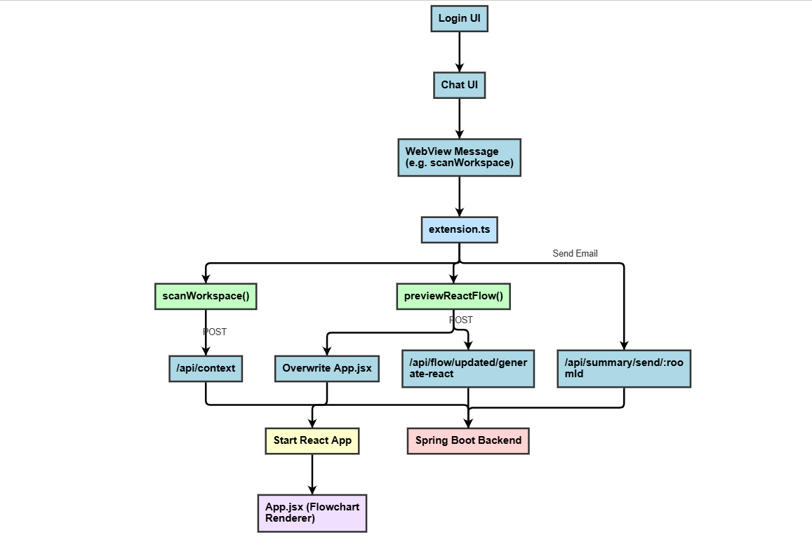
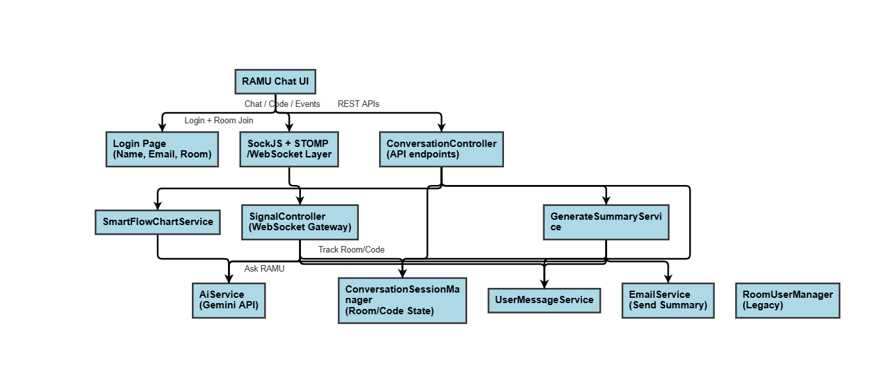

Explore the internal design of RAMU that powers real-time chat, code intelligence, flowchart rendering, and seamless team collaboration inside VS Code.
The RAMU interface is rendered as a WebView in VS Code using HTML, CSS, and JavaScript. It features a multi-tab collaborative UI for chat, file review, and graph rendering.
Real-time chat and updates are managed over WebSockets using the STOMP protocol. Users can collaborate across sessions by connecting to specific Room IDs.
The backend is built using Spring Boot and exposes multiple APIs for code review, chat context, flowchart parsing, and email summarization.
